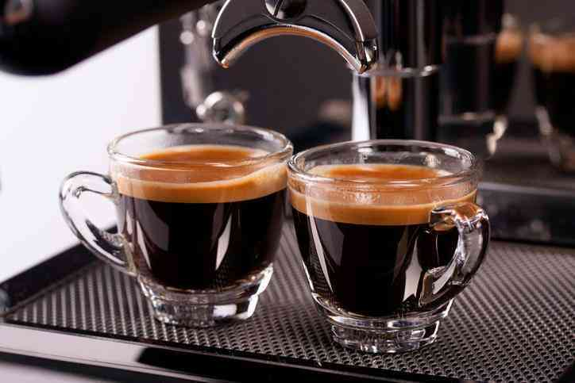

Cà phê được Vun trồng có Trách nhiệm
Chúng tôi thực hiện phương pháp tiếp cận vấn đề tìm nguồn cung ứng cà phê một cách có đạo đức thông qua các nguyên tắc thu mua có trách nhiệm, các khoản vay dành cho người nông dân và các chương trình bảo tồn rừng.
Khi mua cà phê theo cách này, chúng tôi giúp nuôi dưỡng một tương lai tốt đẹp hơn cho người nông dân và một nền khí hậu ổn định hơn cho trái đất, đồng thời cũng tìm được một nguồn cung ứng lâu dài với các loại hạt cà phê có chất lượng cao mà chúng tôi đã cẩn thận pha trộn, rang và đóng gói tươi ngon trong hơn bốn mươi năm qua.
Hơn một thập kỷ qua, Tổ chức Bảo tồn Quốc tế đã giúp chúng tôi phát triển các nguyên tắc thu mua có khả năng giải quyết vấn đề cơ bản về tìm nguồn cung ứng có đạo đức của chúng tôi. Được gọi là Thông lệ về Công bằng cho Người nông dân và Cà phê (C.A.F.E.) , những nguyên tắc này giúp người nông dân trồng cà phê theo cách tốt hơn cho cả con người và hành tinh.
Cà phê hữu cơ được trồng bằng những phương pháp và vật liệu ít có tác động đến môi trường.
Chúng tôi đi đến nơi có hạt cà phê tốt nhất:lên..
Những hạt cà phê tốt nhất mọc tại những nơi có độ cao cao hơn. Những buổi tối lạnh người và ngày nắng ấm tạo ra hạt cà phê đậm đặc hơn. Và hạt cà phê đậm đặc hơn có hương vị đậm hơn, phức tạp hơn. Hãy thưởng thức chúng trong từng tách cà phê của Starbucks.
Những hương vị trong Cốc cà phê của bạn
Cốc cà phê là sản phẩm cuối của một hành trình dài – từ đất đai, người trồng cho đến nhà rang xay, rồi đến đôi tay chờ đợi háo hức của bạn. Mỗi bước đều quan trọng trong việc quyết định loại cà phê đó sẽ có hương vị như thế nào. Hãy cùng chúng tôi quay lại hành trình để xem Starbucks giúp đảm bảo cà phê trở thành cốc cà phê hoàn hảo nhất có thể như thế nào.
Thiết bị Tốt nhất
Để pha một cốc cà phê hoàn hảo, nhân viên pha chế của chúng tôi cần có thiết bị tốt nhất. Không có gì quan trọng hơn máy pha cà phê espresso được thiết kế tùy chỉnh của chúng tôi. Với độ chính xác tuyệt đối, máy pha cà phê espresso xay và đổ các thành phần theo thời gian chính xác cần thiết để có hương vị ngon nhất. Điều này cho phép nhân viên pha chế của chúng tôi tập trung vào việc pha chế cho bạn cốc cà phê theo đúng cách bạn thích.
Chúng tôi cũng đã sử dụng các bình đựng sữa cải tiến mới do chúng tôi thiết kế đặc biệt. Loại bình này giúp nhân viên pha chế của chúng tôi chuyển sữa lạnh thành sữa nóng ngọt vị kem với lớp bọt dày màu sẫm vị ngon nhất.
Thành phần
Và hạt cà phê của chúng tôi luôn được tìm nguồn cung ứng một cách có đạo đức và 100% được chứng nhận của Fairtrade. Vì vậy, chúng không chỉ có vị ngon – mà bản chất thực sự ngon.
Tuy nhiên, hạt cà phê mới chỉ là sự bắt đầu. Một cốc cà phê ngon cần có sữa ngon. Cần có kỹ năng và thời gian để đun sôi sữa thành bọt bong bóng nhỏ màu sẫm. Đây là bọt siêu nhỏ có vị ngọt nhất và nhiều kem nhất.
Thách thức của nhân viên pha chế là trộn sữa nóng với cà phê dưới 10 giây. Sau đó, lớp bọt dày ở trên mặt cà phê mới được rót bắt đầu tan ra và hương vị thay đổi. Vì vậy, nhân viên pha chế phải định lượng thời gian chuẩn để tạo ra cốc cà phê hoàn hảo cho bạn.
Dòng sản phẩm cà phê rang P.Tré Roast™
Với nhiều năm chú trọng và trau dồi chuyên môn, chúng tôi đã có được Dòng sản phẩm cà phê rang Starbucks Roast. Mỗi hạt cà phê đều cần có sự cân bằng duy nhất về nhiệt độ và thời gian để đạt đến đỉnh cao của mùi thơm, độ chua, thành phần và hương vị riêng của chúng. Cà phê của chúng tôi được phân loại theo ba chế độ rang P.Tré® Blonde Roast, Medium Roast và Dark Roast – vì thế bạn có thể dễ dàng tìm thấy hương vị và độ đậm đặc mà bạn thích.

Chúng tôi thưởng thức - một lần, lần nữa, lại lần nữa.
Chúng tôi thử hơn 1000 tách cà phê mỗi ngày để kiểm tra hương vị ưu việt mà mọi người chúng ta (bao gồm cả bạn) mong muốn có. Một lô cà phê được thử ít nhất ba lần trước khi phê chuẩn, nên mỗi khi bạn nhấp một ngụm cà phê của Starbucks®, đó sẽ là ngụm cà phê mà bạn yêu thích.
Câu hỏi thường gặp về Chuẩn bị Cà phê
Cách bảo quản cà phê tốt nhất là gì? Cà phê sẽ tươi trong bao lâu?
Khi được rang, cà phê bắt đầu mất mùi khi tiếp xúc với không khí và độ ẩm lâu hơn. Chúng tôi khuyên bạn nên mua cà phê hàng tuần, bảo quản trong thùng chứa kín ở nơi mát mẻ, ít ánh sáng và chỉ xay cà phê trước khi pha. Cà phê đựng trong túi FlavorLock™ chưa mở sẽ tươi trong vài tháng.
Tôi nên sử dụng loại cà phê xay nào?
Để có được loại cà phê có hương vị thơm ngon nhất, chúng tôi tiếp tục khuyên bạn nên bắt đầu với cà phê nguyên hạt và xay mới cho từng ấm. Hoặc nếu thích, bạn có thể đem cà phê nguyên hạt tới cửa hàng bán lẻ tại địa phương và nhờ họ xay cho bạn.
Những người pha cà phê phin làm tốt nhất với phương pháp xay tổng hợp có sẵn ở các loại cà phê nghiền sơ hoặc với kiểu xay dành riêng cho phin pha loại đáy bằng hoặc hình nón. Tất cả các cửa hàng của Starbucks đều có thể xay cà phê theo kỹ thuật này. Các máy pha cà phê Espresso rất nhạy với cà phê xay và đòi hỏi bột cà phê xay phải rất mịn, 30-35 giây trong máy xay lưỡi dẹt. Cà phê nhỏ giọt chậm và nhanh thường do bột cà phê xay quá mịn hoặc quá thô, hạt cà phê espresso bị đóng băng hoặc đông lạnh và chèn cà phê quá chặt hoặc không đủ chặt.